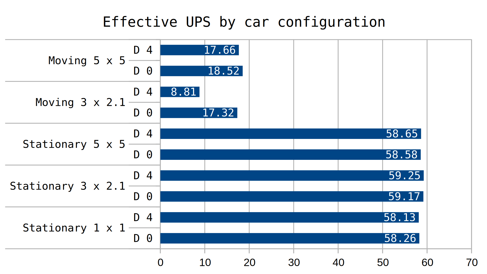

Yes, cars facing not north and moving have a greater negative performance cost. This effect is ramped up big time if the cars are close together. Cars not moving don't appear to have any signifigant orientation performance difference.
A recent performance curiosity proposed by /u/allaizn caught my attention. Essentially, the game saves the collision_box of entities for the north direction only (direction 0 or orientation 0). For all other orientations, the game must perform rotation calculations on that collision_box.
/c
for x=-150,150 do
for y=-150,150 do
game.player.surface.create_entity({name="car", force="player", position={x*3,y*2.1}, direction = 4})
end
end
By using commands, we can create around 90,000 cars in a big square. We can also first create belts so the newly created cars will move. By carefully choosing multipliers, we can specify the distance between cars. The game works on a 2x2 tile grid for collision calculations, and cars have a collision box that is 1.4 x 2 tiles. Thus we can craft our command to place the cars 2.1 tiles apart, as well as 5 tiles apart for a comparison point. (We used 3 for our other dimension since belts can't be on a fraction of a tile). This will be done where cars are stationary, as well as where belts will exist, pushing the cars northward. We have enough belts in our test that for the test duration specified we won't end up at the end of a belt.
As a point of comparison we will also test the case where stationary cars are so close to each other their collision boxes overlap. Thus, the summary of tile spacings we are testing is for moving cars: {x=3, y=2.1}, {x=5, y=5}. And for stationary cars: {x=1, y=1}, {x=3, y=2.1}, {x=5, y=5}. For each spacing we test with cars facing both north and facing south. These two orientations have the same collision box[1], but the north facing ones will, according to the theory presented in this test, hit the fast-path in terms of their rotation calculation.

The data gathered here shows that cars facing north peformed the same as their south facing counterparts if the cars were not moving. However, moving cars showed signifigant difference, particularly in the 3 x 2.1 case. Here, cars are close enough position wise that they fall in to eachother's 2x2 tile grid range. This makes south facing cars take twice as long to update, at this spacing. Looking towards the 5 x 5 tile spacing data, there is still a 5% speedup to having your cars facing north over south. A theory why this might be the case is that cars are in effect colliding with the belt. Another theory that could explain this is when cars move to a new 2 x 2 tile grid location, the south facing ones are further burdened with calculations.
Regardless of why this behavior exists as it does, it clearly shows that facing cars north is the most optimal configuration for car belt based designs. All moving cars should be placed facing north.
Moving cars at all is expensive. The ratio for the time it takes to update stationary:moving-facing-N:moving-facing-S is 100%:342%:672% in our worst case scenario. It is really quite good to leave cars stationary as much as you can. A possible scenario we missed is testing stationary cars on a disabled belt. It is likely performance would be similar to our present stationary tests. It is also unknown if reducing the number of cars (but increasing the amount of time spent moving) would yield a performance advantage.